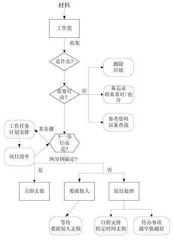

受小时候上学的影响，在相当长的一段时间里，我一直是用课程表的方式来管理我的时间：每天24小时从早到晚划分成N个坑，每到一个时间点该做什么事都是事先计划好的。这种时间管理方式的弊端也是极其明显的：缺乏灵活性。如果计划被临时的任务打断了怎么办？如果在预期的时间内计划没有完成或是提前完成了又怎么办？凡此种种，导致课程表式的时间管理方式总是在坚持了一两周后不了了之。
所以，我开始寻求新的时间管理方式。
GTD是什么
GTD（Getting Things Done）源自一本书的名字，是一套将繁重超负荷的工作生活方式变成无压高效的时间管理系统。Allen在《Getting Things Done》这本小册子里洋洋洒洒下笔千言，很是详尽地描述了如何运用这个系统帮助自己搞定一切任务。然而这本书实在太啰嗦，里面提到的很多辅助工具在现代社会又早已不再实用（比如文件夹档案袋。毕竟我们有一整套的数字化解决方案）。因此，很多人也对GTD这套系统望而生畏。
其实GTD系统的原理很简单。只需要牢记住它的五个环节。这五个环节是：
- 收集：GTD的核心理念在于将大脑中不断涌现出的idea清空出去，放到一个可靠的收集系统中。这样，你的大脑才可以专注于眼前的事务，而不会为将来的Todo感到焦虑。收集就是清空自己大脑的过程。
理清：在这个环节里，你需要对收件箱里的idea进行拆分。这个idea是否可执行？如果是，那么它的下一步行动是？下图是理清过程的一个详细的流程图。经过这个环节，收件箱里的idea被拆分成了有着一系列可执行操作的具体项目。个人认为，这个环节和下面的组织环节，是GTD系统的核心。
组织：在这个环节里，你需要把上一步中理清的项目通过设置合适的Context放入不同的清单里。在Allen的GTD手册里，Context原指达成某项任务必须具备的前置条件，例如给朋友打电话这个动作需要一个“Phone”的Context。清单和Context设置的一个基本原则是，能够方便地聚焦到自己当前可做的任务上。
回顾：回顾是GTD系统里极易被忽视的一个环节。在这个环节里，你要做的是：检查“下一步清单”里是否有未完成的任务；审视“项目清单”里的项目进度；拆分“将来／也许“清单里的项目到”项目清单“里；清空收件箱。
执行：这一点毋庸多说。缺少执行力，再好的系统也是白搭。
GTD是一套TODO类的时间管理系统。它帮助我们记录了还有哪些事情等待着我们去处理（这些事情对完成时间有一定的要求）。作为比较，日历类的时间管理系统帮助我们规划到在某个时间段要做哪些事情（这些事情对任务开始时间和完成时间都有一定的要求）；提醒类的时间管理系统则精确地告诉我们在某个时间点要做什么事情（这些事情对任务的开始时间有硬性的要求）。个人认为，GTD的任务备忘，日历的时间规划，提醒事项的精确提醒，三者相辅相成，才能打造出一个高效率的时间管理系统。
OmniFocus的GTD实践之路
TODO类的时间管理应用有很多，例如Clear，Things。而OmniFocus是其中最符合GTD时间管理理念的一款应用。
为什么这么说？我想这很大一部分要归功于OmniFocus独有的透视功能吧。
很多人在初学OmniFocus的时候，都会对Context、项目、文件夹、透视这些概念感到一头雾水。而如果对GTD的工作流程有一定的了解之后，就会明白：OmniFocus里的透视本质上是一个清单，而项目文件夹和Context的设置，则是为了方便组合出你想要的透视（清单）。
明确了这一点，我们就可以开始自己的OmniFocus设置了。
我建立了7个透视清单。它们是：
- Ritual清单：所有周期性的事项。例如每周的项目回顾，每月还信用卡等。
- Work清单：所有正在进行的，工作相关的事项。例如xx项目的策略调研等
- Research清单：所有正在进行的，个人学习或研究相关的事项。例如学习阅读xx论文。
- Private清单：所有正在进行的，私人的（包括家庭的）事项。例如购物清单，家庭旅行计划等。
- 下一步行动清单：当天要处理的事项。包括重要的（有旗标）和紧急的（due time即将到期）。
- 将来／也许清单：暂时不考虑，但是未来可能要做的事项。
- Hold On清单：所有状态为Hold On的事项。主要用于追踪回顾，排查问题。
为此，我按照Ritual，Work，Research，Private四个主题建立了四个项目文件夹，并在不同的透视中设置相应的聚焦（Focus）。在Context的设置上，我采用了Oceangirl的做法，按照“地点+状态”的方式设置上下文。
不过，GTD系统的搭建很难一蹴而就。我现在的使用方式也或多或少地存在着一定的问题。而这，就需要在日常的使用中去一点点的磨合了。